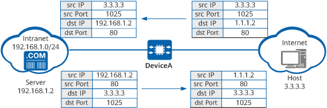

Destination NAT translates both the destination addresses and ports of packets.
Destination NAT translates public IP addresses into private IP addresses so that users on the Internet can access intranet servers using public IP addresses. Figure 1 shows the destination NAT translation process.

When an Internet user accesses a server on the intranet, the destination NAT process on DeviceA is as follows:
Based on whether post-NAT destination addresses are fixed, destination NAT is categorized into static or dynamic destination NAT.